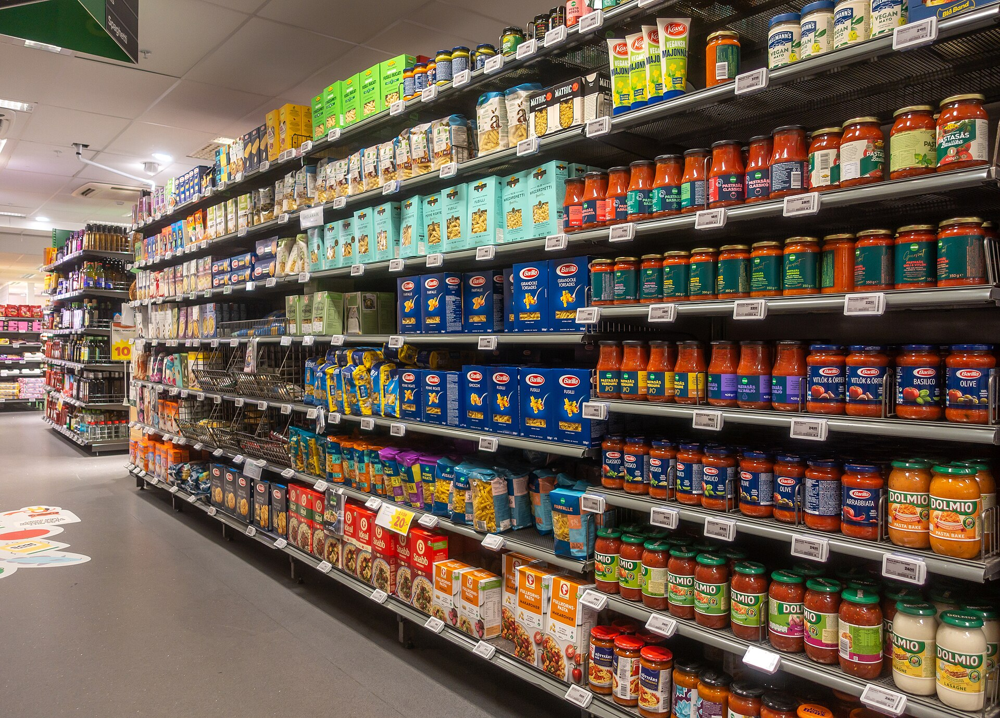

On your own first, then we share as a class.

Ask it badly and you learn nothing, no matter how many people answer.
Breadth. Countable answers from a lot of people. This is most of you."How much do you trust an 'all natural' label? 1 to 5."
Depth. The "why" behind a choice, in someone's own words. A focus group only if the group's reaction is the point."Walk me through the last time a label changed what you bought."
Fixed choices you can add up and chart. Mostly these, or Week 12 hurts.Multiple choice, yes/no, a rating scale.
A blank space for their own words. A couple of these, for the good quotes."What does 'local' mean to you?"
Balance it, give it a middle, and label every point.Strongly disagree · Disagree · Neutral · Agree · Strongly agree.
Points to the answer you want."Don't you think misleading labels are wrong?"
Two questions wearing one coat."Is the label accurate and fairly priced?"
Buries an assumption they never agreed to."How much do greedy brands mislead you?"
No two people read it the same way."Do you buy healthy food often?"
A word your reader may not know."Do you prefer regeneratively sourced goods?"
The options tilt one way, or skip the middle.Excellent · Very good · Good · Fair.
You judged eight food-label questions in the clinic. Let's compare.
On your own. I'll come around.
Cheap reps. Most drafts hide one of the six.